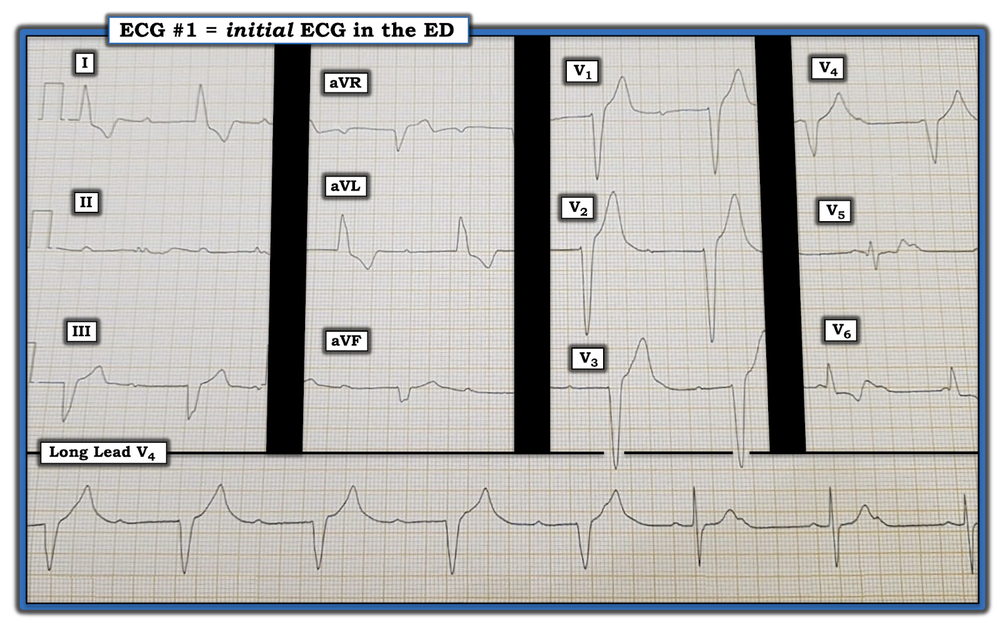
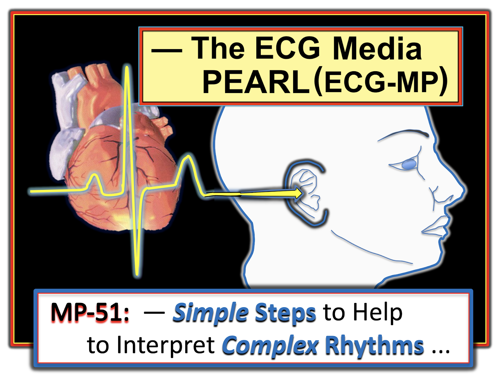
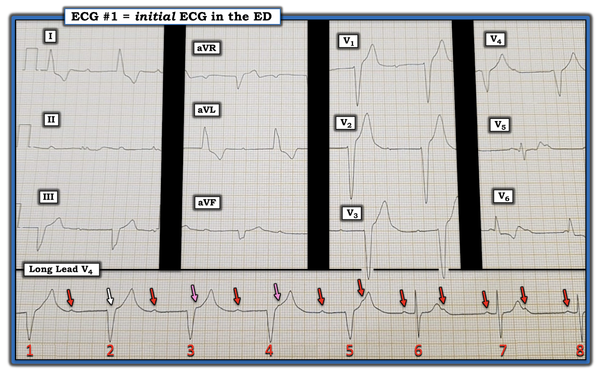
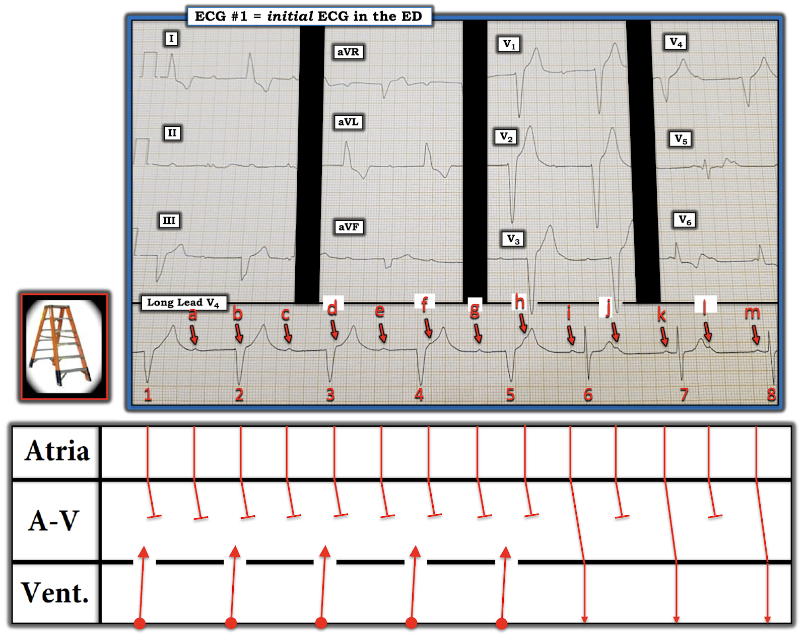
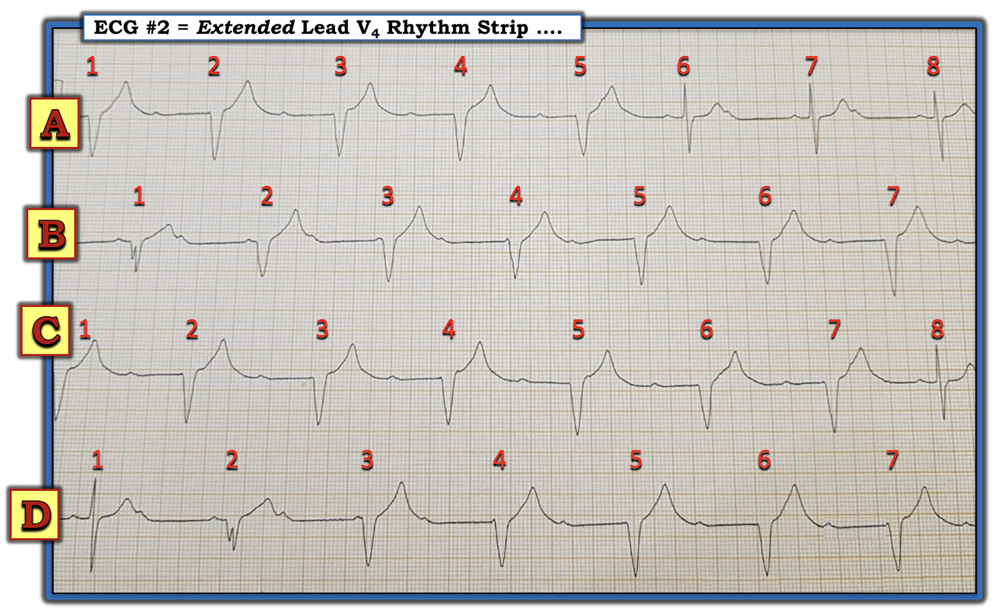
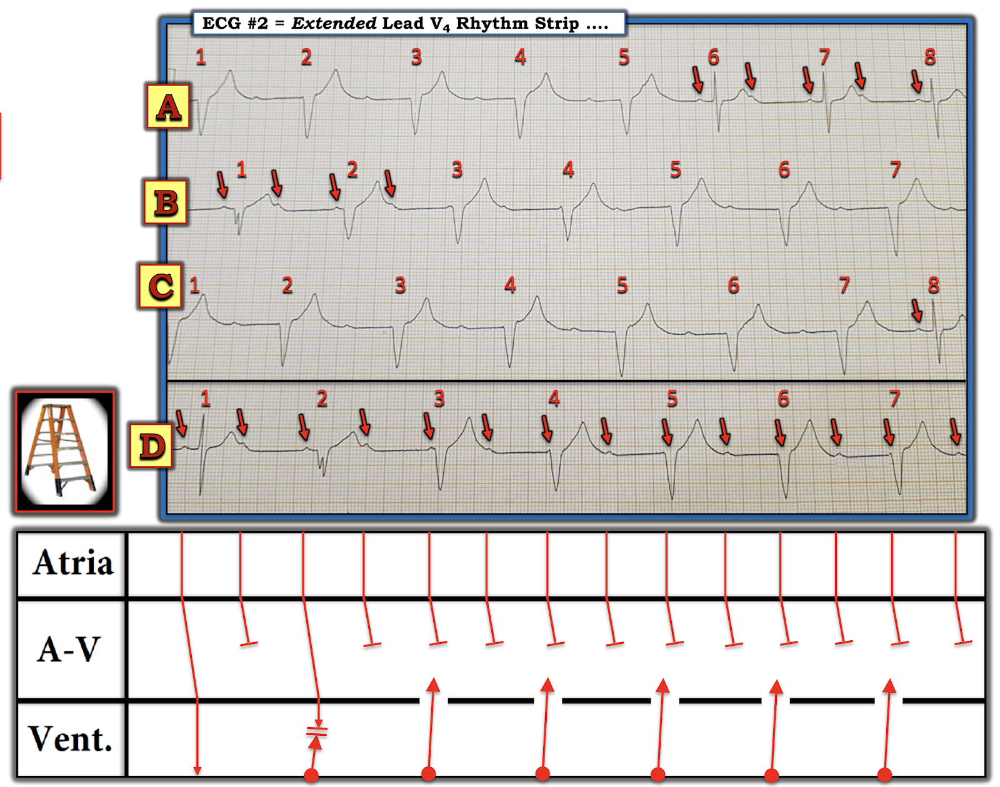
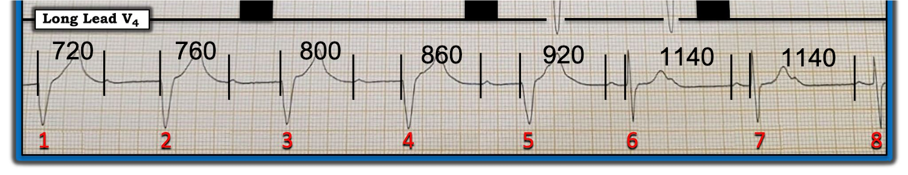
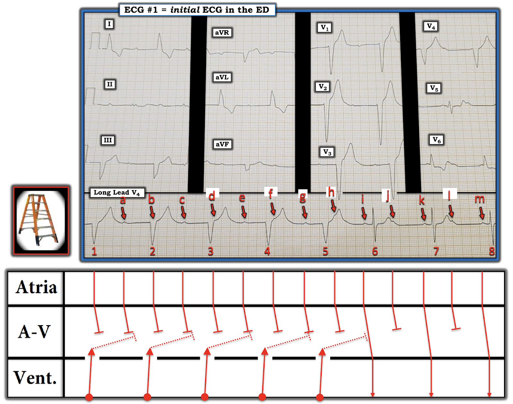

ECG Blog #235 (51) — Có blốc AV hoàn toàn không?
Điện tâm đồ trong Hình-1 được ghi từ một bệnh nhân bị chóng mặt.
- Bạn sẽ đọc điện tâm đồ này như thế nào?
- Và — Có blốc AV hoàn toàn không?


=======================================
LƯU Ý: Đến đây, một số bạn đọc có thể muốn nghe ECG Audio PEARL dài 8:25 phút trước khi đọc Suy nghĩ của tôi về điện tâm đồ trong Hình-1. Bạn có thể tham khảo bất cứ lúc nào phần Suy nghĩ của tôi về bản ghi này (nằm bên dưới ECG MP-51).
=======================================


ECG Media PEARL #51a (7:40 phút Audio) của hôm nay — Điểm lại suy nghĩ của tôi về "Một vài bước đơn giản giúp đọc các rối loạn nhịp phức tạp".
SUY NGHĨ CỦA TÔI về điện tâm đồ trong Hình-1:
Đây là một bản ghi khó đọc. Một dải nhịp chuyển đạo dài được đặt ở phía dưới điện tâm đồ 12 chuyển đạo. Lưu ý rằng cả dải nhịp lẫn 12 chuyển đạo trên điện tâm đồ đều không được ghi đồng thời — điều này làm việc đọc thêm phức tạp. Dù vậy — Quá trình suy nghĩ tuần tự của tôi để đọc nhịp này như sau:
- Phần lớn các nhát trong Hình-1 có QRS rộng. Vì bản ghi của từng chuyển đạo trong 12 chuyển đạo của điện tâm đồ quá ngắn — Chúng ta hoàn toàn phải dựa vào dải nhịp dài chuyển đạo V4 để xác định nhịp.
- QRS của 5 nhát đầu tiên trên dải nhịp rộng. Khoảng R-R đều, dài hơn 6 ô lớn một chút (tương ứng với tần số chỉ dưới 50/phút một chút).
- Các nhát #6, 7 và 8 có phức bộ QRS hẹp. Dường như có ít nhất một phần dẫn truyền — vì mỗi nhát trong 3 nhát cuối này đều đi sau một sóng P với khoảng PR hằng định (và bình thường).
- Nhiều sóng P khác được thấy trên bản ghi này — nhiều sóng trong số đó không có vẻ liên quan đến các phức bộ QRS lân cận. Điều này gợi ý có một mức độ blốc AV nào đó.
ĐIỂM THEN CHỐT (PEARL) #1: Lưu ý rằng nhát #6 xuất hiện sớm hơn dự kiến, nếu xét khoảng R-R dài hơn giữa các nhát #1 đến 5. Điều này gợi ý mạnh rằng nhát #6 là nhát được dẫn truyền, nhất là khi nó đi sau một sóng P với PR bình thường (ngắn hơn bất kỳ khoảng PR nào thấy ở 5 nhát đầu tiên trên bản ghi).
- Vì khoảng PR trước các nhát #7 và 8 giống hệt khoảng PR trước nhát #6 — ta có thể cho rằng các nhát #7 và 8 cũng được dẫn truyền.
===============================
Đến bước này trong quá trình đọc — tôi cần tìm các sóng P còn lại.
CÂU HỎI: Nhịp nhĩ trên dải nhịp dài chuyển đạo V4 của Hình-1 có đều không?
- GỢI Ý: Hãy dùng compa đo (calipers)!
TRẢ LỜI: Tôi đã đánh dấu các sóng P mà tôi thấy trong Hình-1 bằng các mũi tên màu (Hình-2).
- Mũi tên ĐỎ đánh dấu các sóng P mà tôi chắc chắn.
- Đặt compa đo theo khoảng P-P gợi ý bởi 2 sóng P liên tiếp mà tôi chắc chắn (tức là 2 sóng P ngay trước và ngay sau nhát #6 hoặc nhát #7) — tôi "dò bước" ra những vị trí cần tìm thêm sóng P NẾU nhịp nhĩ đều.
- Mũi tên HỒNG chỉ các biến dạng nhỏ nhiều khả năng là sóng P bị ẩn.
- Mũi tên TRẮNG chỉ nơi sóng P còn lại sẽ rơi vào nếu nhịp nhĩ đều.


ĐIỂM THEN CHỐT (PEARL) #2: MẤU CHỐT để chẩn đoán các dạng blốc AV là xác định XEM nhịp nhĩ có đều không, và nếu đều — thì sóng P có liên quan thế nào (nếu có) với các phức bộ QRS lân cận.
- Mũi tên ĐỎ trong Hình-2 cho thấy chắc chắn có các sóng P đều trên gần suốt dải nhịp dài V4.
- Dù vẫn có thể xảy ra "đột ngột xuất hiện" blốc đường ra nút xoang (SA) — nhưng khả năng cao hơn hẳn là các "biến dạng thêm" nhỏ gợi ý dưới các mũi tên HỒNG cũng là sóng P.
- Không có cách nào xác minh có sóng P dưới mũi tên TRẮNG — vì vị trí dự kiến của một sóng P đúng lúc có thể bị ẩn hoàn toàn trong phức bộ QRS của nhát #2. Dù vậy — Điều thường gặp thì hay gặp — và kịch bản khả dĩ hơn cả là các sóng P trên chuyển đạo V4 dài đều.
ĐIỂM THEN CHỐT (PEARL) #3: Đọc nhịp nâng cao đòi hỏi xây dựng giả thuyết dựa trên các giả định hợp lý — rồi kiểm tra lại các giả định này khi thu thập thêm thông tin. Đến bước này trong quá trình đọc — tôi rất nghi ngờ (nhưng chưa thể chứng minh) rằng nhịp nhĩ nền là đều.
- 2 cách để "kiểm tra" giả thuyết của mình là: i) Xem giả thuyết đó có giải thích nhịp một cách hợp lý không; và, ii) Tìm thêm dữ liệu theo dõi trên bệnh nhân để rồi thực sự chứng minh được giả thuyết.
Giản đồ bậc thang (laddergram) đề xuất của tôi cho nhịp trong Hình-2:
Giải thích hợp lý nhất cho nhịp trong Hình-2 — là blốc AV độ 2 mức độ cao. Cho rõ ràng (với giả định nhịp nhĩ đều) — tôi đã đánh dấu tất cả sóng P bằng chữ cái trong Hình-3:
- 5 nhát đầu tiên trên dải nhịp dài chuyển đạo V4 của Hình-3 trông giống blốc AV hoàn toàn — vì QRS rộng, nhịp thất đều — và dường như có phân ly nhĩ thất hoàn toàn (tức là khoảng PR trước 5 nhát đầu này liên tục thay đổi khi các sóng P "diễu qua" 5 phức bộ QRS đầu tiên).
- Lý do QRS giãn rộng là một ổ thoát thất hơi gia tốc (với tần số chỉ dưới 50/phút một chút — trong khi tần số thường gặp của nhịp thoát tự thất là 20-40/phút).
- Dù vậy — nhịp này không phải blốc AV hoàn toàn — vì 3 nhát cuối trên bản ghi này có được dẫn truyền, thể hiện qua: i) Nhát #6 xuất hiện sớm hơn dự kiến; và, ii) Khoảng PR hằng định và bình thường trước các nhát #6, 7 và 8, những nhát giờ đây có phức bộ QRS bình thường (hẹp).


ĐIỀU CỐT LÕI: Tôi đọc nhịp trong Hình-3 là blốc AV độ 2 "mức độ cao". Không sóng P nào ở phần đầu bản ghi được dẫn truyền — mặc dù các sóng P a, c, e và g có đủ cơ hội để dẫn truyền.
- Vì vậy, có phân ly nhĩ thất hoàn toàn ở phần đầu bản ghi — nhưng khi sóng P xuất hiện "đúng thời điểm" (như với các sóng P i, k và m) — thì có dẫn truyền! 3 nhát cuối này dẫn truyền với blốc AV 2:1.
- Việc khi sóng P được dẫn truyền thì khoảng PR bình thường — gợi ý vị trí thấp hơn (và do đó là rối loạn dẫn truyền nặng hơn) của blốc AV (tức là dưới nút AV, trong bó His) này. Bệnh nhân này gần như chắc chắn sẽ cần máy tạo nhịp vĩnh viễn.
===========================
Ca bệnh tiếp diễn:
Bệnh nhân được ghi thêm các dải nhịp khác. Các dải nhịp chuyển đạo V4 bổ sung, không liên tục này được trình bày trong Hình-4.


CÂU HỎI: Các dải nhịp bổ sung này có xác nhận các giả định trước đó của tôi không? (tức là nhịp nhĩ nền đều — và có blốc AV mức độ cao nhưng không hoàn toàn?).
- GỢI Ý: Hãy dùng compa đo!
TRẢ LỜI: Tôi đọc các dải nhịp bổ sung ở các nhịp B, C và D là ủng hộ các giả định trước đó của tôi — điều mà tôi giải thích trong Hình-5:
- Mũi tên ĐỎ đánh dấu một số sóng P được chọn trên các bản ghi này. Lưu ý rằng nhát #8 ở C — và nhát #1 ở D đều có cùng khoảng PR bình thường như các nhát được dẫn truyền #6, 7 và 8 ở A.
- Các nhát #2 đến 7 ở B — các nhát #1 đến 7 ở C — và các nhát #3 đến 7 ở D đều cho thấy thêm các đợt phân ly nhĩ thất hoàn toàn thoáng qua với nhịp thoát thất hơi gia tốc.
- Bằng chứng cuối cùng cho thấy các phức bộ QRS hẹp trên các bản ghi này đúng là được dẫn truyền — đến từ 2 nhát hỗn hợp (fusion beat) mà ta thấy (tức là nhát #1 ở B — và nhát #2 ở D).
- Giản đồ bậc thang trong Hình-5 được vẽ từ Nhịp D. Lưu ý cách thể hiện nhát hỗn hợp (tức là nhát #2 ở D) — có phức bộ QRS và sóng T với hình dạng trung gian giữa nhát được dẫn truyền #1 và các nhát thất #2 đến 7.
ĐIỀU CỐT LÕI: Nhịp trong ca hôm nay là blốc AV độ 2 "mức độ cao" — gần như chắc chắn xuất phát từ vị trí dưới bó His. Bệnh nhân cần máy tạo nhịp vĩnh viễn.


==================================
LỜI CẢM ƠN: Xin cảm ơn BS. Prabhakar Deshpande (từ Nagpur, Ấn Độ) đã cho phép tôi sử dụng bản ghi này — và BS. Mehul đã giới thiệu ca bệnh này với tôi.
==================================
Các bài ECG Blog liên quan đến ca hôm nay:
- ECG Blog #185 — Điểm lại Cách tiếp cận hệ thống của tôi trong đọc nhịp theo “Ps, Qs & 3R Approach”.
- ECG Blog #188 — Điểm lại những điều cốt yếu để đọc (và/hoặc vẽ) Giản đồ bậc thang, kèm ĐƯỜNG LINK tới nhiều giản đồ bậc thang tôi đã vẽ và bàn chi tiết trong các bài khác.
- ECG Blog #191 — Điểm lại sự phân biệt giữa Phân ly nhĩ thất với Blốc AV hoàn toàn.
- ECG Blog #192 — Điểm lại 3 nguyên nhân của phân ly nhĩ thất.
- ECG Blog #186 — Điểm lại một số kiến thức cơ bản về blốc AV, và KHI NÀO nên nghi ngờ blốc AV độ 2 Mobitz I ( = Wenckebach AV).
- ECG Blog 189 — Thêm về việc xác định đang có blốc AV LOẠI nào?
- ECG Blog #133 — Minh họa việc sử dụng nhát hỗn hợp (fusion beat) và phân ly nhĩ thất trong chẩn đoán VT.
- ECG Blog #128 — Điểm lại khái niệm nhát hỗn hợp (fusion beat).
- ECG Blog #129 — AIVR muộn trong chu kỳ (cuối tâm trương) và nhát hỗn hợp (fusion beat) trong chẩn đoán các nhát thất.

==================================
PHẦN BỔ SUNG (ngày 21 tháng 6 năm 2021): Hôm nay tôi nhận được một bình luận về bản ghi này từ David Richley, người mà hầu hết những ai đam mê điện tâm đồ thường lui tới các diễn đàn điện tâm đồ trên internet đều biết. Dave luôn đưa ra những bình luận sắc sảo nhất về đọc các rối loạn nhịp phức tạp. LƯU Ý: Những gì dưới đây đi xa vượt ra ngoài phần cốt lõi! Nhưng với những bạn đọc yêu thích chẩn đoán rối loạn nhịp phức tạp — tôi nghĩ các bạn sẽ thấy phần sau thật cuốn hút!
- Như vẫn thường xảy ra — bình luận của Dave "đưa tôi trở lại bàn vẽ". Tôi đã nhận thấy trong Hình-3 rằng khoảng PR ngắn dần trong suốt nhịp thoát thất cho đến khi cuối cùng, với nhát #6 — sóng P i đã dẫn truyền được. Nhưng trước bình luận của Dave — tôi không hề biết vì sao lại như vậy.
- Tôi xin bổ sung vào bình luận của Dave (mà tôi trình bày bên dưới) để làm rõ rằng khi nói khoảng RP (mà anh ấy tính cho chúng ta trong Hình-6) — thực ra anh ấy muốn nói đến khoảng từ nhát thoát thất đi trước — tới điểm khởi đầu của sóng P thứ 2 trong khoảng R-R đó.
- ĐIỀU CỐT LÕI: Tôi đã "trở lại bàn vẽ" và đặt giả thuyết có dẫn truyền ngược dòng từ nhịp thoát thất (các đường chấm chấm có đầu tù mà tôi vẽ vào Tầng Nút AV trong Hình-7). Khi vẽ thật tỉ mỉ các đường chấm chấm này với độ dài và góc chính xác như nhau — sẽ thấy rõ (đúng như Dave nói) — rằng "mức độ" blốc AV không hề thay đổi — mà do quan hệ thay đổi của các sóng P phân ly trong giai đoạn phân ly nhĩ thất — sóng P i tình cờ rơi vào "đúng thời điểm" cho phép dẫn truyền với blốc AV 2:1.
- ĐIỂM THEN CHỐT cuối cùng: Lý do ban đầu điện tâm đồ này được gửi cho tôi là để hỏi xem tôi có nghĩ đây là blốc AV hoàn toàn không. Giả thuyết của Dave chứng minh rằng mức độ blốc AV chưa bao giờ là hoàn toàn — vì khi sóng P xuất hiện "đúng thời điểm" (tức là bắt đầu từ nhát #6) — chúng có thể và thực sự dẫn truyền xuống thất (dù với blốc AV 2:1). KHÔNG điều gì trong số này thay đổi thực tế rằng bệnh nhân có bệnh hệ thống dẫn truyền nặng — và cần máy tạo nhịp vĩnh viễn. Nhưng nó quả thật tạo nên một cuộc bàn luận hấp dẫn!
- SUY NGHĨ cuối cùng: Hãy quay lại Hình-4. Nhịp A là nhịp tôi trình bày lại trong Hình-7 của tôi. Nhưng hãy xem lại Nhịp C trong Hình-4. Bạn sẽ thấy nhát #8 ở C được dẫn truyền. Và, đúng như bình luận của Dave — lưu ý rằng trong 7 nhát trước đó, khi có phân ly nhĩ thất hoàn toàn và nhịp thoát thất — khoảng PR trước các nhát #2 đến 7 giảm dần (do khoảng RP tăng dần — đó là lý do nhát #8 dẫn truyền được!).




DƯỚI ĐÂY là BÌNH LUẬN tôi nhận được hôm nay từ David Richley:
Đây là một điện tâm đồ rất thú vị và tôi hoàn toàn đồng ý với phân tích của anh. Tôi muốn bổ sung vài điểm. Tôi nghĩ điện tâm đồ này là một ví dụ tốt về điều mà Marriott gọi là "dẫn truyền phụ thuộc RP" (RP-dependent conduction).
- Có thể thấy khó hiểu khi có sự chuyển từ phân ly nhĩ thất hoàn toàn sang blốc 2:1. Tại sao điều này lại xảy ra? Có phải chức năng của hệ thống dẫn truyền đột nhiên "cải thiện"? Lý do của phân ly nhĩ thất và nhịp thoát thất ở 5 nhát đầu tiên — là không xung động nhĩ nào xuất hiện vào thời điểm có thể dẫn truyền — hệ thống dẫn truyền đang trơ.
- Tuy nhiên, trong giai đoạn này — do phân ly nhĩ thất — khoảng RP tăng dần theo từng nhát. Khi khoảng RP đạt 920 ms (ngay trước nhát 6) — hệ thống dẫn truyền đã có đủ thời gian để hồi phục — và nhát 6 là một nhát được dẫn truyền (hay nhát bắt được).
- Các khoảng RP tiếp theo khoảng 1140 ms hiển nhiên có nghĩa là các sóng P xen kẽ sẽ được dẫn truyền, nên có blốc 2:1.
- MẤU CHỐT: Điểm quan trọng là không có thay đổi nào về tình trạng của hệ thống dẫn truyền trong dải nhịp này! Thay vào đó, chính thời điểm của các sóng P so với QRS đi trước (và việc nhịp thoát không tái lập lại được) — mới giải thích sự thay đổi biểu kiến về khả năng dẫn truyền. Bản ghi này minh họa tuyệt vời lý do vì sao bạn không thể chẩn đoán chắc chắn blốc AV hoàn toàn chỉ từ một đoạn điện tâm đồ ngắn.